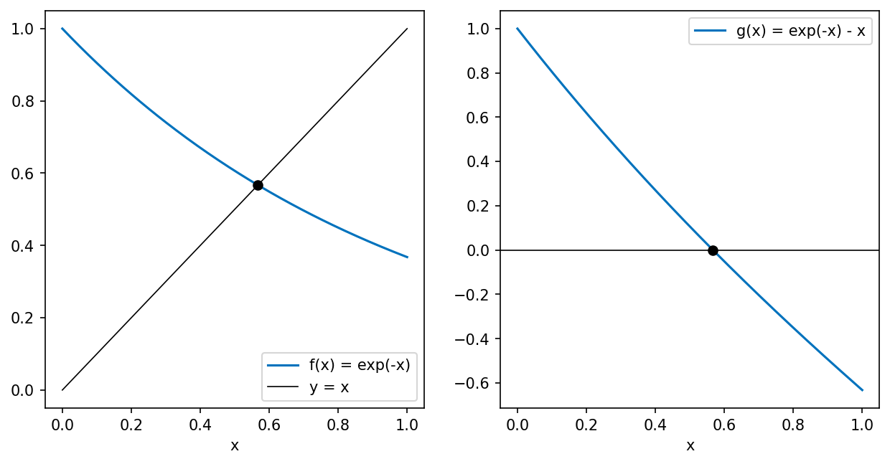
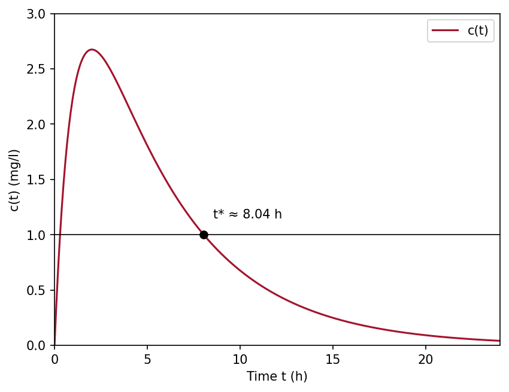

Chapter 1 · Discrete Dynamical Systems with One Variable
1.5Newton's Method
Many equations cannot be solved for x. Newton's method replaces the function by its tangent and takes the root of the tangent as the next approximation. It is itself a difference equation and, when it converges, converges very fast.
For each figure of the section you will find the program that produces it. Change parameters and initial values and observe what happens. Figure and equation numbers refer to the book.
Fig. 1.32
Steady state as a root
e−x = x ⇔ g(x) = e−x − x = 0
The intersection with the diagonal is at the same time the root of g. The fixed-point iteration needs many steps here.

# Fig. 1.32: Steady state of x_{n+1} = exp(-x_n) (book, Section 1.5)
# left: intersection of f(x) = exp(-x) with y = x; right: equivalently the root of g(x) = exp(-x) - x
# (c) 2026 Philipp Kügler · Program for the book "Dynamical Systems in the Life Sciences" · MIT License (see LICENSE)
using Printf, Plots
x = 0.5
for n in 1:100 # fixed-point iteration x_{n+1} = exp(-x_n)
global x = exp(-x)
end
@printf("fixed-point iteration after 100 steps: x = %.10f\n", x)
@printf("g(x) = exp(-x) - x = %.1e\n", exp(-x) - x)
blau = RGB(0, 0.447, 0.741)
xx = range(0, 1, length = 200)
p1 = plot(xx, exp.(-xx), color = blau, lw = 2, label = "f(x) = exp(-x)", xlabel = "x")
plot!(p1, [0, 1], [0, 1], color = :black, label = "y = x"); scatter!(p1, [x], [x], color = :black, label = "")
p2 = plot(xx, exp.(-xx) .- xx, color = blau, lw = 2, label = "g(x) = exp(-x) - x", xlabel = "x")
hline!(p2, [0], color = :black, label = ""); scatter!(p2, [x], [0], color = :black, label = "")
display(plot(p1, p2, layout = (1, 2), size = (900, 420)))% Fig. 1.32: Steady state of x_{n+1} = exp(-x_n) (book, Section 1.5)
% left: intersection of f(x) = exp(-x) with y = x; right: equivalently the root of g(x) = exp(-x) - x
% (c) 2026 Philipp Kügler · Program for the book "Dynamical Systems in the Life Sciences" · MIT License (see LICENSE)
x = 0.5;
for n = 1:100 % fixed-point iteration x_{n+1} = exp(-x_n)
x = exp(-x);
end
fprintf('fixed-point iteration after 100 steps: x = %.10f\n', x);
fprintf('g(x) = exp(-x) - x = %.1e\n', exp(-x) - x);
blau = [0 0.447 0.741];
xx = linspace(0, 1, 200);
subplot(1, 2, 1);
plot(xx, exp(-xx), 'Color', blau); hold on
plot([0 1], [0 1], 'k-'); plot(x, x, 'ko', 'MarkerFaceColor', 'k'); hold off
xlabel('x'); legend('f(x) = exp(-x)', 'y = x');
subplot(1, 2, 2);
plot(xx, exp(-xx) - xx, 'Color', blau); hold on
plot([0 1], [0 0], 'k-'); plot(x, 0, 'ko', 'MarkerFaceColor', 'k'); hold off
xlabel('x'); legend('g(x) = exp(-x) - x');# Fig. 1.32: Steady state of x_{n+1} = exp(-x_n) (book, Section 1.5)
# left: intersection of f(x) = exp(-x) with y = x; right: equivalently the root of g(x) = exp(-x) - x
# (c) 2026 Philipp Kügler · Program for the book "Dynamical Systems in the Life Sciences" · MIT License (see LICENSE)
import numpy as np
import matplotlib.pyplot as plt
x = 0.5
for n in range(100): # fixed-point iteration x_{n+1} = exp(-x_n)
x = np.exp(-x)
print(f"fixed-point iteration after 100 steps: x = {x:.10f}")
print(f"g(x) = exp(-x) - x = {np.exp(-x) - x:.1e}")
xx = np.linspace(0, 1, 200)
fig, axs = plt.subplots(1, 2, figsize=(10, 4.8))
axs[0].plot(xx, np.exp(-xx), color=(0, 0.447, 0.741), label="f(x) = exp(-x)")
axs[0].plot([0, 1], [0, 1], "k", lw=0.8, label="y = x")
axs[0].plot(x, x, "ko")
axs[1].plot(xx, np.exp(-xx) - xx, color=(0, 0.447, 0.741), label="g(x) = exp(-x) - x")
axs[1].axhline(0, color="k", lw=0.8)
axs[1].plot(x, 0, "ko")
for ax in axs:
ax.set_xlabel("x"); ax.legend()
plt.show()# Fig. 1.32: Steady state of x_{n+1} = exp(-x_n) (book, Section 1.5)
# left: intersection of f(x) = exp(-x) with y = x; right: equivalently the root of g(x) = exp(-x) - x
# (c) 2026 Philipp Kügler · Program for the book "Dynamical Systems in the Life Sciences" · MIT License (see LICENSE)
x <- 0.5
for (n in 1:100) x <- exp(-x) # fixed-point iteration x_{n+1} = exp(-x_n)
cat(sprintf("fixed-point iteration after 100 steps: x = %.10f\n", x))
cat(sprintf("g(x) = exp(-x) - x = %.1e\n", exp(-x) - x))
blau <- rgb(0, 0.447, 0.741)
xx <- seq(0, 1, length.out = 200)
par(mfrow = c(1, 2))
plot(xx, exp(-xx), type = "l", col = blau, lwd = 2, xlab = "x", ylab = "")
abline(0, 1); points(x, x, pch = 16)
legend("topright", legend = c("f(x) = exp(-x)", "y = x"), col = c(blau, "black"), lwd = c(2, 1))
plot(xx, exp(-xx) - xx, type = "l", col = blau, lwd = 2, xlab = "x", ylab = "")
abline(h = 0); points(x, 0, pch = 16)
legend("topright", legend = "g(x) = exp(-x) - x", col = blau, lwd = 2)Output in the command window
fixed-point iteration after 100 steps: x = 0.5671432904
g(x) = exp(-x) - x = 0.0e+00Fig. 1.33
The first steps of Newton's method
xn+1 = xn − g(xn) / g′(xn)
For g(x) = e−5x − x and x0 = 0.05: the root of each tangent gives the next approximation. The number of correct digits roughly doubles per step.

# Fig. 1.33: The first steps of Newton's method (book, Section 1.5, Eq. 1.44)
# x_{n+1} = x_n - g(x_n)/g'(x_n) for g(x) = exp(-5x) - x with x_0 = 0.05
# (c) 2026 Philipp Kügler · Program for the book "Dynamical Systems in the Life Sciences" · MIT License (see LICENSE)
using Printf, Plots
g(x) = exp(-5x) - x
dg(x) = -5exp(-5x) - 1
x = zeros(7); x[1] = 0.05
for k in 1:6
x[k + 1] = x[k] - g(x[k]) / dg(x[k])
end
for k in 1:7
@printf("x_%d = %.12f\n", k - 1, x[k]) # the number of correct digits roughly doubles per step
end
xx = range(0, 0.35, length = 300)
bilder = []
for p in 1:2
b = plot(xx, g.(xx), color = RGB(0, 0.447, 0.741), lw = 2, legend = false, xlims = (0, 0.35), ylims = (-0.35, 1), xlabel = "x")
hline!(b, [0], color = :black)
for j in 1:p # tangent at x_{j-1}, its root is x_j
plot!(b, xx, g(x[j]) .+ dg(x[j]) .* (xx .- x[j]), color = :black)
plot!(b, [x[j], x[j]], [0, g(x[j])], ls = :dot, color = :black)
end
scatter!(b, x[1:p + 1], zeros(p + 1), color = RGB(0.64, 0.08, 0.18))
push!(bilder, b)
end
display(plot(bilder..., layout = (1, 2), size = (900, 420)))% Fig. 1.33: The first steps of Newton's method (book, Section 1.5, Eq. 1.44)
% x_{n+1} = x_n - g(x_n)/g'(x_n) for g(x) = exp(-5x) - x with x_0 = 0.05
% (c) 2026 Philipp Kügler · Program for the book "Dynamical Systems in the Life Sciences" · MIT License (see LICENSE)
g = @(x) exp(-5 * x) - x;
dg = @(x) -5 * exp(-5 * x) - 1;
x = zeros(1, 7); x(1) = 0.05;
for k = 1:6
x(k + 1) = x(k) - g(x(k)) / dg(x(k));
end
for k = 1:7
fprintf('x_%d = %.12f\n', k - 1, x(k)); % the number of correct digits roughly doubles per step
end
xx = linspace(0, 0.35, 300);
for p = 1:2
subplot(1, 2, p);
plot(xx, g(xx), 'Color', [0 0.447 0.741]); hold on
plot([0 0.35], [0 0], 'k-');
for j = 1:p % tangent at x_{j-1}, its root is x_j
plot(xx, g(x(j)) + dg(x(j)) * (xx - x(j)), 'k-');
plot([x(j) x(j)], [0 g(x(j))], 'k:');
end
plot(x(1:p + 1), zeros(1, p + 1), 'o', 'Color', [0.64 0.08 0.18], 'MarkerFaceColor', [0.64 0.08 0.18]);
hold off; axis([0 0.35 -0.35 1]); xlabel('x');
end# Fig. 1.33: The first steps of Newton's method (book, Section 1.5, Eq. 1.44)
# x_{n+1} = x_n - g(x_n)/g'(x_n) for g(x) = exp(-5x) - x with x_0 = 0.05
# (c) 2026 Philipp Kügler · Program for the book "Dynamical Systems in the Life Sciences" · MIT License (see LICENSE)
import numpy as np
import matplotlib.pyplot as plt
g = lambda x: np.exp(-5 * x) - x
dg = lambda x: -5 * np.exp(-5 * x) - 1
x = [0.05]
for n in range(6):
x.append(x[-1] - g(x[-1]) / dg(x[-1]))
for n, v in enumerate(x):
print(f"x_{n} = {v:.12f}") # the number of correct digits roughly doubles per step
xx = np.linspace(0, 0.35, 300)
fig, axs = plt.subplots(1, 2, figsize=(10, 4.8))
for ax, k in zip(axs, (1, 2)):
ax.plot(xx, g(xx), color=(0, 0.447, 0.741), label="g(x)")
ax.axhline(0, color="k", lw=0.8)
for j in range(k): # tangent at x_j, its root is x_{j+1}
ax.plot(xx, g(x[j]) + dg(x[j]) * (xx - x[j]), "k--" if j < k - 1 else "k-", lw=1)
ax.plot([x[j], x[j]], [0, g(x[j])], "k:")
ax.plot(x[:k + 1], np.zeros(k + 1), "o", color=(0.64, 0.08, 0.18))
ax.set_xlim(0, 0.35); ax.set_ylim(-0.35, 1); ax.set_xlabel("x"); ax.legend()
plt.show()# Fig. 1.33: The first steps of Newton's method (book, Section 1.5, Eq. 1.44)
# x_{n+1} = x_n - g(x_n)/g'(x_n) for g(x) = exp(-5x) - x with x_0 = 0.05
# (c) 2026 Philipp Kügler · Program for the book "Dynamical Systems in the Life Sciences" · MIT License (see LICENSE)
g <- function(x) exp(-5 * x) - x
dg <- function(x) -5 * exp(-5 * x) - 1
x <- numeric(7); x[1] <- 0.05
for (k in 1:6) x[k + 1] <- x[k] - g(x[k]) / dg(x[k])
for (k in 1:7) cat(sprintf("x_%d = %.12f\n", k - 1, x[k])) # the number of correct digits roughly doubles per step
xx <- seq(0, 0.35, length.out = 300)
par(mfrow = c(1, 2))
for (p in 1:2) {
plot(xx, g(xx), type = "l", col = rgb(0, 0.447, 0.741), lwd = 2, xlim = c(0, 0.35), ylim = c(-0.35, 1), xlab = "x", ylab = "")
abline(h = 0)
for (j in 1:p) { # tangent at x_{j-1}, its root is x_j
lines(xx, g(x[j]) + dg(x[j]) * (xx - x[j]))
lines(c(x[j], x[j]), c(0, g(x[j])), lty = 3)
}
points(x[1:(p + 1)], rep(0, p + 1), pch = 16, col = rgb(0.64, 0.08, 0.18))
}Output in the command window
x_0 = 0.050000000000
x_1 = 0.198917082143
x_2 = 0.258915906327
x_3 = 0.265285835375
x_4 = 0.265344928070
x_5 = 0.265344933048
x_6 = 0.265344933048Fig. 1.34
Newton's method without convergence
g(x) = x3 − 2x + 2, x0 = 0
The approximations jump back and forth between 0 and 1. With the initial value −1 the method finds the root x* ≈ −1.769 at once.

# Fig. 1.34: Newton's method without convergence (book, Section 1.5, Eq. 1.44)
# g(x) = x^3 - 2x + 2 with x_0 = 0: the approximations jump between 0 and 1, the root at -1.769 is not found
# (c) 2026 Philipp Kügler · Program for the book "Dynamical Systems in the Life Sciences" · MIT License (see LICENSE)
using Printf, Plots
g(x) = x^3 - 2x + 2
dg(x) = 3x^2 - 2
x = zeros(7)
for k in 1:6
x[k + 1] = x[k] - g(x[k]) / dg(x[k])
end
println("x_0 ... x_6 = ", join([@sprintf("%g", v) for v in x], " "))
xs = -1.0 # with a better initial value it works
for k in 1:8
global xs = xs - g(xs) / dg(xs)
end
@printf("start at -1: root x* = %.6f\n", xs)
xx = range(-2.2, 1.8, length = 400)
p = plot(xx, g.(xx), color = RGB(0, 0.447, 0.741), lw = 2, legend = false, ylims = (-2.2, 4.5), xlabel = "x")
hline!(p, [0], color = :black)
zz = range(-0.6, 1.6, length = 10)
for a in (0, 1) # the two tangents
plot!(p, zz, g(a) .+ dg(a) .* (zz .- a), color = :black)
end
scatter!(p, [0, 1], [0, 0], color = RGB(0.64, 0.08, 0.18))
scatter!(p, [xs], [0], color = :black)
display(p)% Fig. 1.34: Newton's method without convergence (book, Section 1.5, Eq. 1.44)
% g(x) = x^3 - 2x + 2 with x_0 = 0: the approximations jump between 0 and 1, the root at -1.769 is not found
% (c) 2026 Philipp Kügler · Program for the book "Dynamical Systems in the Life Sciences" · MIT License (see LICENSE)
g = @(x) x.^3 - 2 * x + 2;
dg = @(x) 3 * x.^2 - 2;
x = zeros(1, 7);
for k = 1:6
x(k + 1) = x(k) - g(x(k)) / dg(x(k));
end
fprintf('x_0 ... x_6 = '); fprintf('%g ', x); fprintf('\n');
xs = -1; % with a better initial value it works
for k = 1:8
xs = xs - g(xs) / dg(xs);
end
fprintf('start at -1: root x* = %.6f\n', xs);
xx = linspace(-2.2, 1.8, 400);
plot(xx, g(xx), 'Color', [0 0.447 0.741]); hold on
plot([-2.2 1.8], [0 0], 'k-');
zz = linspace(-0.6, 1.6, 10);
for a = [0 1] % the two tangents
plot(zz, g(a) + dg(a) * (zz - a), 'k-');
end
plot([0 1], [0 0], 'o', 'Color', [0.64 0.08 0.18], 'MarkerFaceColor', [0.64 0.08 0.18]);
plot(xs, 0, 'ko', 'MarkerFaceColor', 'k');
hold off; ylim([-2.2 4.5]); xlabel('x');# Fig. 1.34: Newton's method without convergence (book, Section 1.5, Eq. 1.44)
# g(x) = x^3 - 2x + 2 with x_0 = 0: the approximations jump between 0 and 1, the root at -1.769 is not found
# (c) 2026 Philipp Kügler · Program for the book "Dynamical Systems in the Life Sciences" · MIT License (see LICENSE)
import numpy as np
import matplotlib.pyplot as plt
g = lambda x: x**3 - 2 * x + 2
dg = lambda x: 3 * x**2 - 2
x = [0.0]
for n in range(6):
x.append(x[-1] - g(x[-1]) / dg(x[-1]))
print("x_0 ... x_6 =", " ".join(f"{v:g}" for v in x))
xs = -1.0 # with a better initial value it works
for n in range(8):
xs = xs - g(xs) / dg(xs)
print(f"start at -1: root x* = {xs:.6f}")
xx = np.linspace(-2.2, 1.8, 400)
plt.plot(xx, g(xx), color=(0, 0.447, 0.741), label="g(x) = x^3 - 2x + 2")
plt.axhline(0, color="k", lw=0.8)
zz = np.linspace(-0.6, 1.6, 10)
for a in (0, 1): # the two tangents
plt.plot(zz, g(a) + dg(a) * (zz - a), "k", lw=1)
plt.plot([0, 1], [0, 0], "o", color=(0.64, 0.08, 0.18))
plt.plot(xs, 0, "ko")
plt.ylim(-2.2, 4.5); plt.xlabel("x"); plt.legend(loc="upper left")
plt.show()# Fig. 1.34: Newton's method without convergence (book, Section 1.5, Eq. 1.44)
# g(x) = x^3 - 2x + 2 with x_0 = 0: the approximations jump between 0 and 1, the root at -1.769 is not found
# (c) 2026 Philipp Kügler · Program for the book "Dynamical Systems in the Life Sciences" · MIT License (see LICENSE)
g <- function(x) x^3 - 2 * x + 2
dg <- function(x) 3 * x^2 - 2
x <- numeric(7)
for (k in 1:6) x[k + 1] <- x[k] - g(x[k]) / dg(x[k])
cat("x_0 ... x_6 =", sprintf("%g", x), "\n")
xs <- -1 # with a better initial value it works
for (k in 1:8) xs <- xs - g(xs) / dg(xs)
cat(sprintf("start at -1: root x* = %.6f\n", xs))
xx <- seq(-2.2, 1.8, length.out = 400)
plot(xx, g(xx), type = "l", col = rgb(0, 0.447, 0.741), lwd = 2, ylim = c(-2.2, 4.5), xlab = "x", ylab = "")
abline(h = 0)
zz <- seq(-0.6, 1.6, length.out = 10)
for (a in c(0, 1)) lines(zz, g(a) + dg(a) * (zz - a)) # the two tangents
points(c(0, 1), c(0, 0), pch = 16, col = rgb(0.64, 0.08, 0.18))
points(xs, 0, pch = 16)Output in the command window
x_0 ... x_6 = 0 1 0 1 0 1 0
start at -1: root x* = -1.769292Fig. 1.35
Drug level below 1 mg/l
c(t) = 5 (e−0.2t − e−t) = 1
When does the concentration fall below 1 mg/l? Newton's method with initial value 10 h gives t* ≈ 8.04 h after a few steps.

# Fig. 1.35: When does the drug level fall below 1 mg/l? (book, Section 1.5, Eq. 1.44)
# c(t) = 5 (exp(-0.2 t) - exp(-t)); Newton's method for g(t) = c(t) - 1 with initial value t_0 = 10 h
# (c) 2026 Philipp Kügler · Program for the book "Dynamical Systems in the Life Sciences" · MIT License (see LICENSE)
using Printf, Plots
c(t) = 5 * (exp(-0.2t) - exp(-t))
dc(t) = 5 * (-0.2exp(-0.2t) + exp(-t))
t = zeros(6); t[1] = 10
for k in 1:5
t[k + 1] = t[k] - (c(t[k]) - 1) / dc(t[k])
end
for k in 1:6
@printf("t_%d = %.6f h\n", k - 1, t[k])
end
tt = range(0, 24, length = 500)
p = plot(tt, c.(tt), color = RGB(0.64, 0.08, 0.18), lw = 2, legend = false, xlims = (0, 24), ylims = (0, 3),
xlabel = "Time t (h)", ylabel = "c(t) (mg/l)")
hline!(p, [1], color = :black); scatter!(p, [t[end]], [1], color = :black)
annotate!(p, t[end] + 0.5, 1.15, text(@sprintf("t* = %.2f h", t[end]), 9, :left))
display(p)% Fig. 1.35: When does the drug level fall below 1 mg/l? (book, Section 1.5, Eq. 1.44)
% c(t) = 5 (exp(-0.2 t) - exp(-t)); Newton's method for g(t) = c(t) - 1 with initial value t_0 = 10 h
% (c) 2026 Philipp Kügler · Program for the book "Dynamical Systems in the Life Sciences" · MIT License (see LICENSE)
c = @(t) 5 * (exp(-0.2 * t) - exp(-t));
dc = @(t) 5 * (-0.2 * exp(-0.2 * t) + exp(-t));
t = zeros(1, 6); t(1) = 10;
for k = 1:5
t(k + 1) = t(k) - (c(t(k)) - 1) / dc(t(k));
end
for k = 1:6
fprintf('t_%d = %.6f h\n', k - 1, t(k));
end
tt = linspace(0, 24, 500);
plot(tt, c(tt), 'Color', [0.64 0.08 0.18]); hold on
plot([0 24], [1 1], 'k-'); plot(t(end), 1, 'ko', 'MarkerFaceColor', 'k');
text(t(end) + 0.5, 1.15, sprintf('t* = %.2f h', t(end)));
hold off; axis([0 24 0 3]); xlabel('Time t (h)'); ylabel('c(t) (mg/l)');# Fig. 1.35: When does the drug level fall below 1 mg/l? (book, Section 1.5, Eq. 1.44)
# c(t) = 5 (exp(-0.2 t) - exp(-t)); Newton's method for g(t) = c(t) - 1 with initial value t_0 = 10 h
# (c) 2026 Philipp Kügler · Program for the book "Dynamical Systems in the Life Sciences" · MIT License (see LICENSE)
import numpy as np
import matplotlib.pyplot as plt
c = lambda t: 5 * (np.exp(-0.2 * t) - np.exp(-t))
dc = lambda t: 5 * (-0.2 * np.exp(-0.2 * t) + np.exp(-t))
t = [10.0]
for n in range(5):
t.append(t[-1] - (c(t[-1]) - 1) / dc(t[-1]))
for n, v in enumerate(t):
print(f"t_{n} = {v:.6f} h")
tt = np.linspace(0, 24, 500)
plt.plot(tt, c(tt), color=(0.64, 0.08, 0.18), label="c(t)")
plt.axhline(1, color="k", lw=0.8)
plt.plot(t[-1], 1, "ko")
plt.text(t[-1] + 0.5, 1.15, f"t* ≈ {t[-1]:.2f} h")
plt.xlim(0, 24); plt.ylim(0, 3)
plt.xlabel("Time t (h)"); plt.ylabel("c(t) (mg/l)"); plt.legend()
plt.show()# Fig. 1.35: When does the drug level fall below 1 mg/l? (book, Section 1.5, Eq. 1.44)
# c(t) = 5 (exp(-0.2 t) - exp(-t)); Newton's method for g(t) = c(t) - 1 with initial value t_0 = 10 h
# (c) 2026 Philipp Kügler · Program for the book "Dynamical Systems in the Life Sciences" · MIT License (see LICENSE)
konz <- function(t) 5 * (exp(-0.2 * t) - exp(-t)) # c(t); in R the name c() is already taken
dc <- function(t) 5 * (-0.2 * exp(-0.2 * t) + exp(-t))
t <- numeric(6); t[1] <- 10
for (k in 1:5) t[k + 1] <- t[k] - (konz(t[k]) - 1) / dc(t[k])
for (k in 1:6) cat(sprintf("t_%d = %.6f h\n", k - 1, t[k]))
tt <- seq(0, 24, length.out = 500)
plot(tt, konz(tt), type = "l", col = rgb(0.64, 0.08, 0.18), lwd = 2, xlim = c(0, 24), ylim = c(0, 3),
xlab = "Time t (h)", ylab = "c(t) (mg/l)")
abline(h = 1); points(t[6], 1, pch = 16)
text(t[6] + 0.5, 1.15, sprintf("t* = %.2f h", t[6]), adj = 0)Output in the command window
t_0 = 10.000000 h
t_1 = 7.605250 h
t_2 = 8.021572 h
t_3 = 8.039102 h
t_4 = 8.039131 h
t_5 = 8.039131 hTry it in the browser · no installation
Try Newton's method
Choose a function and an initial value. The app draws the tangents and lists the approximations.
MATLAB apps from the course
Download, put into a folder, and type the name without extension in MATLAB, e.g. heron_newton_app. The apps use the graphical user interface of MATLAB and do not run in GNU Octave. Their user interface is in German.
- heron_newton_app.mHeron sequence and Newton's method